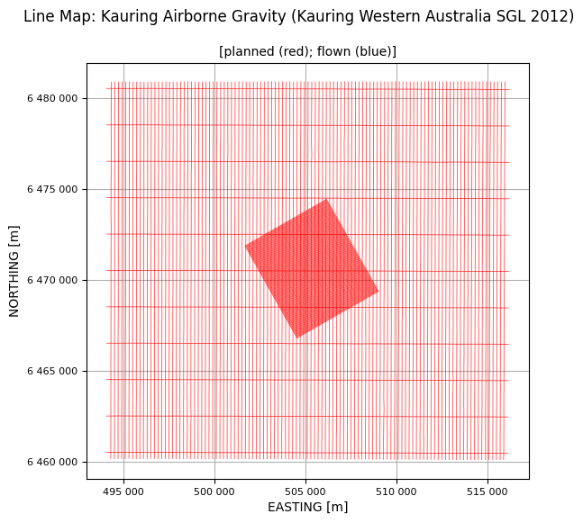

Prepare 2012 Kauring AirGrav ASEG-GDF2 data¶
See EastVic Data for latest organisation of Prepare tutorials
This short tutorial demonstrates the preparation of ASEG-GDF2 data for QC review.
We need all the data in HDF5 geoWhizz format because all the QC functions expect that format. (More on the geoWhizz format elsewhere in the galileoQC documentation.)
For this example we are using the data from the Kauring airborne gravity survey flown by SGL in 2012.
This step is reasonably straightforward and once complete, the QC of the data should proceed quickly and smoothly, and the outputs will be clearly documented so that the JupyterLab notebook can serve as the QC report.
Import modules and set filenames
from pathlib import Path
import galileoQC as qc
dx = Path(r'./Kauring_grv/GRAV.DAT')
2012 Kauring Gravimeter Survey
asegToHDF does all the work. You must specify the channel containing the line number so that it can organise the data by flight-line. Optionally, you can also supply the channels containing the flight number, and date (not present in the 2012 Kauring data), and a list of channels you do not want copied across to the geowhizz HDF file.
# asegToHdf fails if the file exists so delete it if it does. CHECK
if dx.with_suffix('.hdf5').exists():
dx.with_suffix('.hdf5').unlink()
Here we omit many channels to keep the volume of data in the repository reasonably sized.
dh = qc.asegToHDF(Path(dx),
lineChannel='LINE',
flightChannel='FLIGHT',
omitChannels=['SECOND', 'DAYOFYEAR', 'YEAR',
'ALTTER', 'BAREEARTHTER', 'DEMTER', 'FZ', 'AZ',
'GRVRAW', 'LATCOR', 'EOTCOR', 'FACOR', 'GRVFRA100S', 'INTCOR',
'GRVFRAL100S', 'FTBCOR_267', 'GRVFAL0600M', 'GRVFAL1000M',
'FVDBGL0600M_267', 'FVDBGL1000M_267', 'GNDGRV_FA_UPWARD',
'GRVBGL0600M_267', 'GRVBGL1000M_267', 'GNDGRV_BG_UPWARD'])
No field width found in format code A4
WARNING - no date channel found.
Key channels for linegroup attributes found:
LINE at 2, FLIGHT at 3.
12 channels to be written to geoWhizz file:
['EASTING', 'NORTHING', 'LINE', 'FLIGHT', 'FID', 'UTCSECOND',
'LATITUDE', 'LONGITUD', 'GPSZ', 'MSLZ', 'ALT', 'GRVBGL100S_267']
Writing to geoWhizz file: Kauring_grv/GRAV.hdf5
Setting Line attributes for Kauring_grv/GRAV.hdf5 to include flight numbers from FLIGHT.
NO ACTION TAKEN ON LINE_TYPE - no plan file provided.
NO ACTION TAKEN ON LINE_TYPE - line_type not in:
['Xcal_nsw', 'Xcal_can', 'SGL_GA', 'SGL_NSW', 'NRG', 'ARK', 'SGL_GDF', 'SGL_Kauring'].
Complete.
Once the file is created, we can add in the project and block name. These are used in plot titles, keeping the report informative and clear.
block_name = 'Kauring Western Australia SGL 2012'
project_name = 'Kauring Airborne Gravity'
qc.updateProject(dh, acquirer='SGL', projectName=project_name, blockID=block_name)
Setting ProjectName = Kauring Airborne Gravity for GRAV.hdf5.
Setting BlockID = Kauring Western Australia SGL 2012 for GRAV.hdf5.
Setting Acquirer = SGL for GRAV.hdf5.
The CoordFrame metadata provides the names of default channels, and related coordinate information, for the QC functions.
qc.updateCoordFrame(dh,
lat='LATITUDE',
lon='LONGITUD',
x='EASTING',
y='NORTHING',
time='UTCSECOND',
alt='GPSZ',
geoDatum='WGS84',
htDatum='GRS80',
projection='UTM',
utmz='50')
Changed CoordFrame attribute(s) for GRAV.hdf5.
The line_type tells updateLineAttributes how to extract the planned line number, the segment number, and the repeat number from each reported survey line number. It also allows it to classify flight-lines as traverse or control lines. This information is used by various QC functions.
More details on Line Types can be found elsewhere in the documentation.
qc.updateLineAttributes(dh, line_type='SGL_Kauring')
NO ACTION TAKEN ON LINE_TYPE - no plan file provided.
Setting Line attributes for GRAV.hdf5 according to the SGL_Kauring scheme.
Now we can report the contents of our new geowhizz file.
qc.reportWhizz(dh)
Whizz Version 1.0
Acquirer: SGL
BlockID: Kauring Western Australia SGL 2012
ProjectName: Kauring Airborne Gravity
Coordinates
AltitudeChannel: GPSZ
GeoDatum: WGS84
HeightDatum: GRS80
LatitudeChannel: LATITUDE
LongitudeChannel: LONGITUD
Projection: UTM
TimeChannel: UTCSECOND
UTMZone: 50
XChannel: EASTING
YChannel: NORTHING
224 lines: total distance flown [km] = 3,106.1
224 lines:
['100100', '100200', '100300', '100400', '100500', '100600', '100700',
'100800', '100900', '10100', '101000', '101100', '101200', '101300',
'101400', '101500', '101600', '101700', '101800', '101900', '10200',
'102000', '102100', '102200', '102300', '102400', '102500', '102600',
'102700', '102800', '102900', '10300', '103000', '103100', '103200',
'103300', '103400', '103500', '103600', '103700', '103800', '103900',
'10400', '104000', '104100', '104200', '104300', '104400', '104500',
'104600', '104700', '104800', '104900', '10500', '105000', '105100',
'105200', '105300', '105400', '105500', '105600', '105700', '105800',
'105900', '10600', '106000', '106100', '106200', '106300', '106400',
'106500', '106600', '106700', '106800', '106900', '10700', '107000',
'107100', '107200', '107300', '107400', '107500', '107600', '107700',
'107800', '107900', '10800', '108000', '108100', '108200', '108300',
'108400', '108500', '108600', '108700', '108800', '108900', '10900',
'109000', '109100', '109200', '109300', '109400', '109500', '109600',
'109700', '109800', '109900', '11000', '110000', '110100', '110200',
'110300', '110400', '110500', '110600', '110700', '110800', '110900',
'11100', '200100', '200201', '200300', '200400', '200500', '200600',
'200700', '200801', '200901', '201000', '201101', '201200', '201300',
'201400', '201501', '201601', '201700', '201800', '201900', '202000',
'202100', '202200', '202300', '202400', '202501', '202600', '202701',
'202800', '202901', '203001', '203100', '203201', '203303', '203401',
'203501', '203601', '203701', '203801', '203902', '204001', '204101',
'204200', '204300', '204401', '204500', '204600', '204700', '204800',
'204900', '205001', '205100', '205200', '205300', '205401', '205500',
'205600', '205700', '205800', '205901', '206000', '206100', '206200',
'206300', '206400', '206501', '206600', '206700', '206800', '206900',
'207000', '207100', '207200', '207300', '207400', '207500', '207600',
'207700', '207800', '207900', '208000', '208100', '208200', '208300',
'208400', '208500', '208601', '208701', '208800', '208900', '209001',
'209100', '209201', '209300', '209401', '209500', '209601', '209701',
'209801', '209901', '210000', '210101', '210200', '210300', '210400']
12 channels:
['ALT', 'EASTING', 'FID', 'FLIGHT', 'GPSZ', 'GRVBGL100S_267',
'LATITUDE', 'LINE', 'LONGITUD', 'MSLZ', 'NORTHING', 'UTCSECOND']
The units, and the description, if it exists and is formatted according to the standard, are copied from the DFN file.
qc.reportChannels(dh, verbose=True)
Whizz Version 1.0
12 channels:
channel units description
--------------------------------------------------
ALT m
EASTING m
FID
FLIGHT
GPSZ m
GRVBGL100S_267 mGal
LATITUDE degrees
LINE
LONGITUD degrees
MSLZ m
NORTHING m
UTCSECOND s
qc.reportSampling(dh)
Whizz Version 1.0
Acquirer: SGL
BlockID: Kauring Western Australia SGL 2012
ProjectName: Kauring Airborne Gravity
Sample time and distance statistics
Min = -86399.500 s, 16.2 m
Max = 0.500 s, 27.8 m
Mean = -0.780 s, 23.0 m
Stdev = 333 s, 2 m
We can check that the traverse and control lines have been correctly classified. We have not asked for a classification on the basis of odd or even line-numbering.
qc.reportWhizz(dh, line='100100')
Whizz Version 1.0
Acquirer: SGL
BlockID: Kauring Western Australia SGL 2012
ProjectName: Kauring Airborne Gravity
Coordinates
AltitudeChannel: GPSZ
GeoDatum: WGS84
HeightDatum: GRS80
LatitudeChannel: LATITUDE
LongitudeChannel: LONGITUD
Projection: UTM
TimeChannel: UTCSECOND
UTMZone: 50
XChannel: EASTING
YChannel: NORTHING
Line <HDF5 group "/Whizz Version 1.0/Lines/100100" (12 members)>
1 lines: total distance flown [km] = 20.7
Flight: 13
FlightNumber: 13
LineNumber: 100100
LineType: SGL_Kauring
LineVariety: Traverse
NumberOfFids: 854
ReflightNumber: 0
Segment: 0.0
['100100', '100200', '100300', '100400', '100500', '100600', '100700',
'100800', '100900', '10100', '101000', '101100', '101200', '101300',
'101400', '101500', '101600', '101700', '101800', '101900', '10200',
'102000', '102100', '102200', '102300', '102400', '102500', '102600',
'102700', '102800', '102900', '10300', '103000', '103100', '103200',
'103300', '103400', '103500', '103600', '103700', '103800', '103900',
'10400', '104000', '104100', '104200', '104300', '104400', '104500',
'104600', '104700', '104800', '104900', '10500', '105000', '105100',
'105200', '105300', '105400', '105500', '105600', '105700', '105800',
'105900', '10600', '106000', '106100', '106200', '106300', '106400',
'106500', '106600', '106700', '106800', '106900', '10700', '107000',
'107100', '107200', '107300', '107400', '107500', '107600', '107700',
'107800', '107900', '10800', '108000', '108100', '108200', '108300',
'108400', '108500', '108600', '108700', '108800', '108900', '10900',
'109000', '109100', '109200', '109300', '109400', '109500', '109600',
'109700', '109800', '109900', '11000', '110000', '110100', '110200',
'110300', '110400', '110500', '110600', '110700', '110800', '110900',
'11100', '200100', '200201', '200300', '200400', '200500', '200600',
'200700', '200801', '200901', '201000', '201101', '201200', '201300',
'201400', '201501', '201601', '201700', '201800', '201900', '202000',
'202100', '202200', '202300', '202400', '202501', '202600', '202701',
'202800', '202901', '203001', '203100', '203201', '203303', '203401',
'203501', '203601', '203701', '203801', '203902', '204001', '204101',
'204200', '204300', '204401', '204500', '204600', '204700', '204800',
'204900', '205001', '205100', '205200', '205300', '205401', '205500',
'205600', '205700', '205800', '205901', '206000', '206100', '206200',
'206300', '206400', '206501', '206600', '206700', '206800', '206900',
'207000', '207100', '207200', '207300', '207400', '207500', '207600',
'207700', '207800', '207900', '208000', '208100', '208200', '208300',
'208400', '208500', '208601', '208701', '208800', '208900', '209001',
'209100', '209201', '209300', '209401', '209500', '209601', '209701',
'209801', '209901', '210000', '210101', '210200', '210300', '210400']
12 channels:
['ALT', 'EASTING', 'FID', 'FLIGHT', 'GPSZ', 'GRVBGL100S_267',
'LATITUDE', 'LINE', 'LONGITUD', 'MSLZ', 'NORTHING', 'UTCSECOND']
Make a flight-line map
qc.linesMap([dh], whizzPlanFile=dh)
